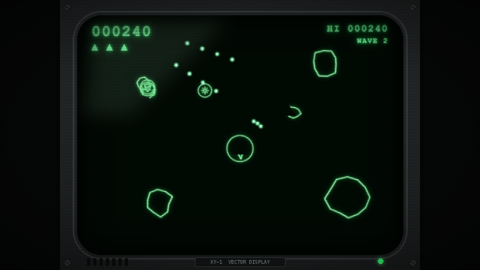
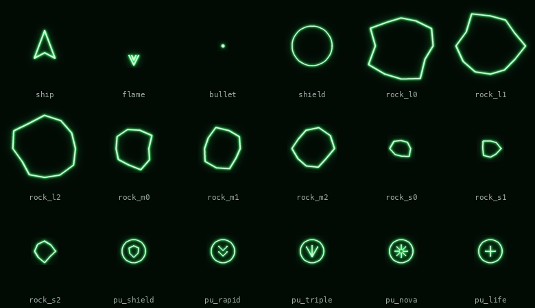
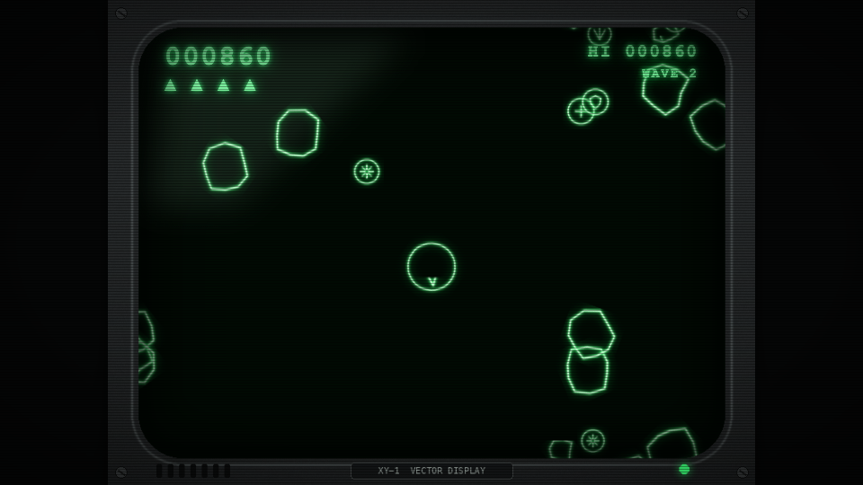
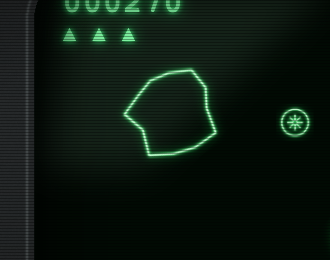
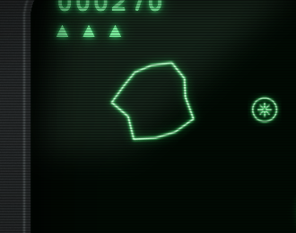
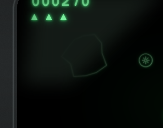
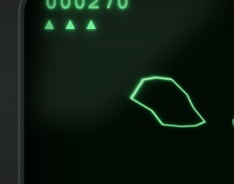
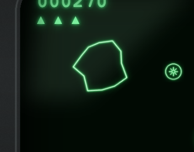
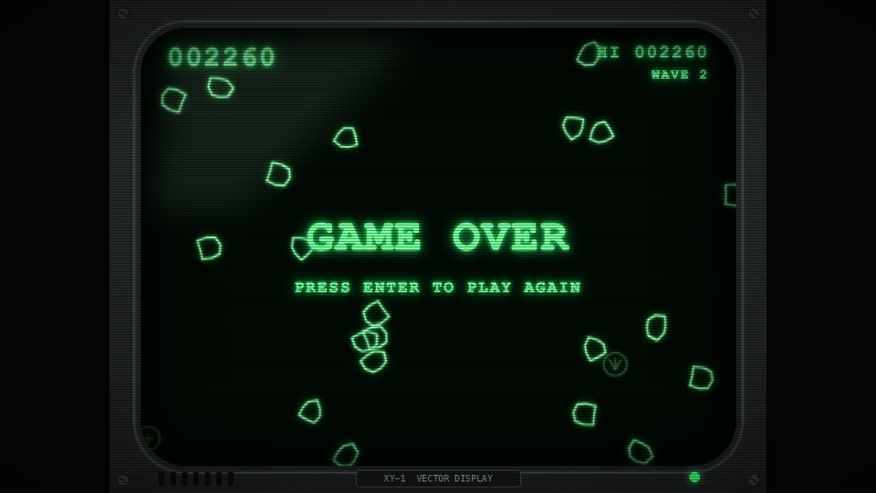

44 · Vector Rocks: Asteroids on a green vector monitor
Goal: make a real, fun game in an afternoon: Asteroids on an old XY vector monitor. Deep green phosphor lines with a soft glow, scanlines, a plastic monitor bezel with a nameplate and a power LED, a heartbeat that speeds up as the rocks run out, and five power-ups (shield, rapid fire, triple shot, nova and an extra life). Everything is written Unity-style: MonoBehaviour, Singleton, Instantiate, Destroy, coroutines, triggers, PlayerPrefs, EventBus.

Download: the project, also in examples/vector-rocks. Open nord.project.json and press Play.
Controls: A / D or ← → turn, W or ↑ thrust, Space fire, Shift hyperspace (a random jump), Enter after Game Over.
Start from the starter project#
In Unity you would start from a starter project: all the art, sounds, prefabs and the scene already set up, but none of the code. Do that here:
Download the starter project (the finished game is the other download above). Unzip it, open nord.project.json and press Play: you see an empty black screen. What is inside:

assets/sprites/: the ship, its flame, the bullet, the shield ring, nine rocks (three shapes in each of three sizes) and five power-up icons, plusbezel.png, the monitor frame (800 × 600, transparent screen). All are line drawings with a baked phosphor glow, made bytools/gen_vector_rocks_art.py.assets/particles/andassets/audio/sfx/: spark streaks, the soft dot, a ring, and the laser, explosion, death, power-up, teleport and tick sounds.prefabs/:bullet,rock-large-0..2,rock-medium-0..2,rock-small-0..2,pu-shield,pu-rapid,pu-triple,pu-nova,pu-life,explosion,nova. Sprites, rigidbodies, circle trigger colliders and particles are set up; the scripts are not attached.scenes/main.scene.json:Camera,Game,Ship(with itsFlameandShieldchildren, both switched off),Hud. Thecrtscanline effect is on. No scripts.nord.project.json: 800 × 600 display, dark green background, no gravity, the input actions.scripts/: empty. This is where you write the code below.
Write the scripts in the order of the sections that follow, and attach each one:
| Script | Attach it to |
|---|---|
Playfield.js |
nothing (a helper module the others import) |
Ship.js |
the Ship object in the scene |
Rock.js |
the nine rock-* prefabs, with the field size = 0 for small, 1 for medium, 2 for large |
Bullet.js |
the bullet prefab |
PowerUp.js |
the five pu-* prefabs, with the field type = shield, rapid, triple, nova or life |
Game.js |
the Game object |
Hud.js |
the Hud object |
(Inspector ▸ + Add script; for a prefab open it first with Open prefab.)
The parts#
| File | Unity equivalent | Job |
|---|---|---|
Game.js |
a GameManager singleton |
score, lives, waves, the heartbeat, hi-score |
Ship.js |
the player script | turn, thrust, fire, power-ups, die, respawn |
Rock.js |
an enemy script | drift, spin, split when hit, drop power-ups |
Bullet.js |
a projectile | fly, hit a rock, disappear |
PowerUp.js |
a pickup | drift, throb, fade, get collected |
Playfield.js |
a static helper class | the screen edges and wrapping |
Hud.js |
a Canvas with a Canvas Scaler | score, lives, notices, the bezel and the bloom |
prefabs/*.prefab.json |
prefabs | bullet, 9 rock shapes, 5 power-ups, explosion, nova |
About 370 lines in total, comments included. The art is made by python3 tools/gen_vector_rocks_art.py: every line drawing is drawn with a core, a mid-green and a wide blurred halo, which is what makes a line look like it is made of light.
1 How to make a vector monitor#
A real XY monitor has no pixels: an electron beam draws lines, and the phosphor keeps glowing for a moment. We fake the three things you notice:
- Lines made of light. The sprites are line drawings with a baked glow: a thin white-green core, a stronger green around it and a wide soft halo. On a very dark green background (
#010a03) they look lit from inside. - Bloom. Bright things bleed light over their surroundings. The HUD adds a layer that blurs and brightens what is behind it and puts it back on top with the
screenblend mode: a one-line CSSbackdropFilter: 'blur(6px) brightness(2.3) saturate(1.5)'. - Scanlines, curved glass and the bezel. The scene effect
{ "type": "crt", "intensity": 0.35 }adds scanlines. The bezel is one 800 × 600 image with a transparent screen opening, rounded corners, an inner shadow, a glass reflection, screws, a nameplate and an LED. It lies on top of the whole game.
Set up the project look#
In the editor. Open the Project tab and unfold Project properties:
- Game size: type
800×600(the preset buttons Tablet, HD and Full HD are for other shapes). - Scaling:
fit(the game is scaled to fit any window). - Pixel art: off (the lines are smooth, not pixels).
- Background:
#010a03, a green-black. - Physics:
arcade, gravity Y:0(we look at space, nothing falls). - Press Apply project properties.
In the file nord.project.json (open it in any text editor to check): the editor wrote these two blocks.
"display": { "width": 800, "height": 600, "scale": "fit", "pixelArt": false, "background": "#010a03" },
"physics": { "engine": "arcade", "gravity": [0, 0, 0] }Add the scanlines (scene effect)#
The editor has no panel for scene effects yet, so this one is done in the scene file, or in code.
Option 1, in the file scenes/main.scene.json: the scene has a settings object. Add (or extend) its effects list:
"settings": { "effects": [ { "type": "crt", "intensity": 0.35 } ] }Option 2, in code, inside Start() of any script that lives in the scene (for example Hud.js), after the labels are created:
this.game.effects.add(this.scene, 'crt', { intensity: 0.35 });The finished project uses option 1. The effect list of the whole engine, with parameters, is in Effects, particles and timelines.
Why a 4:3 game? The monitors this imitates were 4:3. The game stays 800 × 600 and is scaled to fit any window; the black bars are the table the monitor stands on.
2 The screen, and wrapping#
Playfield.js knows where the visible screen is (inside the bezel) and wraps objects around it:
File: scripts/Playfield.js (new file, the whole file; a helper the other scripts import, attach it to nothing)
// The visible screen inside the monitor bezel. A plain static helper class, like a Unity static utility.
export default class Playfield {
static Left = 40;
static Right = 760;
static Top = 36;
static Bottom = 564;
static Width = 720;
static Height = 528;
/** Asteroids has no walls: leave on one side, come back on the other. */
static Wrap(entity, margin = 0) {
const p = entity.pos;
let x = p[0], y = p[1];
if (x < Playfield.Left - margin) x += Playfield.Width + margin * 2;
else if (x > Playfield.Right + margin) x -= Playfield.Width + margin * 2;
if (y < Playfield.Top - margin) y += Playfield.Height + margin * 2;
else if (y > Playfield.Bottom + margin) y -= Playfield.Height + margin * 2;
if (x !== p[0] || y !== p[1]) entity.pos = [x, y, p[2]];
}
/** A random point on the border of the screen. */
static RandomEdgePoint() {
return Math.random() < 0.5
? [Math.random() < 0.5 ? Playfield.Left : Playfield.Right, Playfield.Top + Math.random() * Playfield.Height]
: [Playfield.Left + Math.random() * Playfield.Width, Math.random() < 0.5 ? Playfield.Top : Playfield.Bottom];
}
}Unity has no equivalent of static helper classes because C# has them built in; in JavaScript a class with only static members does the same. Anything can call Playfield.Wrap(this.entity).
3 The ship#
The scene has an entity Ship (tag Player) with a sprite, a rigidbody (dynamic), a circle collider that is a trigger, and two disabled children Flame and Shield. The script:
File: scripts/Ship.js (new file, the whole file; attach it to the Ship object)
import { MonoBehaviour, SerializeField, Instantiate, Destroy, Mathf, Vector2, Time, KeyCode, UnityInput as Input, WaitForSeconds, EventBus } from 'nord';
import Playfield from './Playfield.js';
import Game from './Game.js';
import Rock from './Rock.js';
import PowerUp from './PowerUp.js';
import Bullet from './Bullet.js';
export default class Ship extends MonoBehaviour {
static attributes = SerializeField({ turnSpeed: 200, thrust: 260, maxSpeed: 340, drag: 0.35, fireDelay: 0.26 });
Awake() {
this.heading = 0; // degrees, 0 = up, clockwise
this.v = Vector2.zero;
this.nextShot = 0;
this.alive = true;
this.shieldLeft = 0; // seconds of each power-up that is still running
this.rapidLeft = 0;
this.tripleLeft = 0;
}
Start() {
this.flame = this.FindChild('Flame');
this.shield = this.FindChild('Shield');
this.StartCoroutine(this.Spawn());
}
get invulnerable() { return this.shieldLeft > 0 || this.safe; }
Update() {
if (!this.alive) return;
const dt = Time.deltaTime;
this.heading += Input.GetAxis('Horizontal') * this.turnSpeed * dt;
this.entity.rot = [0, 0, this.heading];
const thrusting = Input.GetKey(KeyCode.UpArrow) || Input.GetKey(KeyCode.W);
const r = this.heading * Mathf.Deg2Rad;
if (thrusting) this.v = this.v.Add(new Vector2(Math.sin(r), -Math.cos(r)).Mul(this.thrust * dt));
this.v = Vector2.ClampMagnitude(this.v.Mul(1 - this.drag * dt), this.maxSpeed); // a little space friction keeps it playable
this.flame.enabled = thrusting && Math.floor(Time.time * 30) % 2 === 0; // flicker like a real vector flame
if (Input.GetKey(KeyCode.Space) && Time.time >= this.nextShot) this.Fire();
if (Input.GetKeyDown(KeyCode.LeftShift)) this.Hyperspace();
this.shieldLeft = Math.max(0, this.shieldLeft - dt);
this.rapidLeft = Math.max(0, this.rapidLeft - dt);
this.tripleLeft = Math.max(0, this.tripleLeft - dt);
this.shield.enabled = this.shieldLeft > 0 && (this.shieldLeft > 2 || Math.floor(this.shieldLeft * 8) % 2 === 0); // blinks when it is about to run out
Playfield.Wrap(this.entity, 14);
}
FixedUpdate() { if (this.alive) this.velocity = this.v; }
async Fire() {
this.nextShot = Time.time + (this.rapidLeft > 0 ? 0.08 : this.fireDelay);
this.audio.play('assets/audio/sfx/laser.wav', { volume: 0.35, rate: 1.2 });
const angles = this.tripleLeft > 0 ? [-12, 0, 12] : [0];
const nose = new Vector2(Math.sin(this.heading * Mathf.Deg2Rad), -Math.cos(this.heading * Mathf.Deg2Rad)).Mul(22);
for (const a of angles) {
const b = await Instantiate('prefabs/bullet.prefab.json', { pos: [this.entity.pos[0] + nose.x, this.entity.pos[1] + nose.y, 2] });
b.getScript(Bullet).Launch(this.heading + a, this.v.Mul(0.4));
}
}
Hyperspace() { // a risky jump to a random place
this.entity.pos = [Mathf.Lerp(Playfield.Left, Playfield.Right, Math.random()), Mathf.Lerp(Playfield.Top, Playfield.Bottom, Math.random()), 2];
this.audio.play('assets/audio/sfx/teleport.wav', { volume: 0.5 });
}
OnTriggerEnter(other) {
if (!this.alive) return;
if (other.hasTag('PowerUp')) { this.Collect(other.getScript(PowerUp).type); Destroy(other); return; }
if (other.hasTag('Rock') && !this.invulnerable) { other.getScript(Rock).Hit(); this.Die(); }
}
Collect(type) {
this.audio.play('assets/audio/sfx/powerup.wav', { volume: 0.6 });
if (type === 'shield') this.shieldLeft = 8;
else if (type === 'rapid') this.rapidLeft = 8;
else if (type === 'triple') this.tripleLeft = 8;
else if (type === 'life') Game.instance.AddLife();
else if (type === 'nova') this.Nova();
EventBus.Publish('powerup', { type });
}
/** Blow up every rock that is on the screen right now. */
Nova() {
this.game.camera.flash(250, '#3dff7a');
this.game.camera.shake(300, 0.012);
Instantiate('prefabs/nova.prefab.json', { pos: [...this.entity.pos] }).then((fx) => Destroy(fx, 1.2));
for (const rock of this.FindGameObjectsWithTag('Rock')) rock.getScript(Rock).Hit();
}
Die() {
this.alive = false;
this.entity.enabled = false; // hidden. A disabled object does not run its coroutines, so Game brings us back
const p = this.entity.pos;
this.audio.play('assets/audio/sfx/death.wav', { volume: 0.7 });
this.game.camera.shake(350, 0.015);
Instantiate('prefabs/explosion.prefab.json', { pos: [p[0], p[1], 3], overrides: { components: { 0: { burst: 40 } } } }).then((fx) => Destroy(fx, 1));
this.shieldLeft = this.rapidLeft = this.tripleLeft = 0;
if (Game.instance.LoseLife()) Game.instance.StartCoroutine(Game.instance.Respawn(this)); // no lives left: Game shows GAME OVER instead
}
*Spawn() {
this.entity.enabled = true;
this.entity.pos = [(Playfield.Left + Playfield.Right) / 2, (Playfield.Top + Playfield.Bottom) / 2, 2];
this.v = Vector2.zero;
this.heading = 0;
this.alive = true;
this.safe = true; // two seconds of blinking safety
for (let i = 0; i < 20; i++) { this.entity.native?.setAlpha(i % 2 ? 1 : 0.25); yield new WaitForSeconds(0.1); }
this.entity.native?.setAlpha(1);
this.safe = false;
}
}In the editor: select the Ship object, then Inspector ▸ + Add script ▸ scripts/Ship.js. The scene or prefab file then lists the script under "scripts".
The Unity ideas, in order:
static attributes = SerializeField({ turnSpeed: 200, … })is[SerializeField] float turnSpeed = 200;. The fields show up in the Inspector and you read them asthis.turnSpeed.Input.GetAxis('Horizontal'),Input.GetKey(KeyCode.W)andInput.GetKeyDown(KeyCode.LeftShift)are the Unity input calls, working on WASD, arrows and gamepads.- Angles. The ship's
headingis in degrees, 0 = up, clockwise, the same asentity.rot[2]. The direction it points to is(sin h, −cos h)(the y axis of a Nord screen points down). - Inertia. Thrust adds to the velocity vector
this.v, aVector2; friction multiplies it by1 − drag·dt;Vector2.ClampMagnitudelimits the top speed.FixedUpdatehands it to the physics body withthis.velocity = this.v, exactlyrb.velocity = v. Time.time >= this.nextShotis the usual fire-rate gate.- Power-ups are three timers (
shieldLeft,rapidLeft,tripleLeft) that count down inUpdate. Firing looks at them: rapid fire shortens the delay, triple fire shoots at −12°, 0° and +12°. OnTriggerEnter(other)is Unity'sOnTriggerEnter2D.otheris the entity that entered;other.hasTag('Rock')isCompareTag,other.getScript(Rock)isGetComponent<Rock>().- The flame flickers by turning a child on and off 15 times a second:
this.flame.enabled = …. The shield blinks when it is about to run out. - Dying and respawning.
Die()hides the ship, spends a life and asks theGameto bring it back.Spawn()is a coroutine: it places the ship in the middle and blinks it for two seconds, during which it issafe.
Trap: coroutines stop when their object is disabled. In Unity too! If the dead ship started its own respawn coroutine and then hid itself, the coroutine would never continue. That is why
Die()callsGame.instance.StartCoroutine(Game.instance.Respawn(this)): the Game is always active.
4 Rocks, bullets, power-ups#
Rock.js:
File: scripts/Rock.js (new file, the whole file; attach it to the nine rock-* prefabs)
import { MonoBehaviour, SerializeField, Instantiate, Destroy, Random, Time, Vector2 } from 'nord';
import Playfield from './Playfield.js';
import Game from './Game.js';
const SIZES = ['small', 'medium', 'large'];
const POINTS = [100, 50, 20];
export default class Rock extends MonoBehaviour {
static attributes = SerializeField({ size: 2 }); // 2 large, 1 medium, 0 small (set by the prefab)
Awake() { this.spin = Random.Range(-70.5, 70.5); this.dead = false; }
/** A prefab path for a rock of this size (2 large, 1 medium, 0 small): one of three shapes. */
static Prefab(size) { return `prefabs/rock-${SIZES[size]}-${Random.Range(0, 3)}.prefab.json`; }
Launch(velocity) { this.velocity = velocity; }
Update() {
this.Rotate(0, 0, this.spin * Time.deltaTime);
Playfield.Wrap(this.entity, 40);
}
/** Called by a bullet, a nova, or the ship ramming us. */
async Hit() {
if (this.dead) return;
this.dead = true;
const game = Game.instance;
const p = this.entity.pos;
game.AddScore(POINTS[this.size]);
this.audio.play(`assets/audio/sfx/explosion${this.size === 0 ? '_small' : ''}.wav`, { volume: 0.6 });
Instantiate('prefabs/explosion.prefab.json', { pos: [p[0], p[1], 3], overrides: { components: { 0: { burst: 10 + this.size * 10 } } } }).then((fx) => Destroy(fx, 1));
if (this.size > 0) {
const v = this.velocity; // children inherit a push from the parent, then fly apart
for (let i = 0; i < 2; i++) {
const away = Random.insideUnitCircle.normalized.Mul(30 + game.wave * 4);
const child = await Instantiate(Rock.Prefab(this.size - 1), { pos: [p[0], p[1], 1] });
child.getScript(Rock).Launch(v.Mul(0.5).Add(away).Mul(1.25));
}
}
if (Random.value < [0.22, 0.14, 0.08][this.size]) { // small rocks drop power-ups most often
Instantiate(`prefabs/pu-${Random.Pick(['shield', 'rapid', 'triple', 'nova', 'life'])}.prefab.json`, { pos: [p[0], p[1], 2] });
}
Destroy(this.entity);
}
}In the editor: select the nine rock-* prefabs, then Inspector ▸ + Add script ▸ scripts/Rock.js. Prefabs: first Assets ▸ right-click the prefab ▸ Open prefab. The scene or prefab file then lists the script under "scripts".
- One script, three sizes: each prefab sets
size(0 small, 1 medium, 2 large) and has a different picture and collider. Three shapes per size make the sky look varied:Random.Range(0, 3)picks one. Hit()is the whole life of a rock after birth: score, sound, explosion, split into two smaller rocks that inherit half of the parent's speed plus a random push, sometimes a power-up (small rocks drop them most often), and finallyDestroy(this.entity).Instantiate(path, { pos })returns a Promise (loading a prefab may touch the network). Inasync Hit()we simplyawaitit; in a normal method we use.then(...).- Trap:
Random.Rangewith two whole numbers returns an integer, like in C#.Random.Range(-70, 70)would give integers;Random.Range(-70.5, 70.5)gives a float. JavaScript cannot tell70.0from70.
Bullet.js and PowerUp.js are tiny:
File: scripts/Bullet.js (new file, the whole file; attach it to the bullet prefab)
import { MonoBehaviour, SerializeField, Destroy, Vector2, Mathf } from 'nord';
import Playfield from './Playfield.js';
import Rock from './Rock.js';
export default class Bullet extends MonoBehaviour {
static attributes = SerializeField({ speed: 460, lifetime: 1.0 });
/** `heading` is in degrees, 0 = up, clockwise (the same as the ship's rotation). */
Launch(heading, inherit) {
const r = heading * Mathf.Deg2Rad;
this.velocity = new Vector2(Math.sin(r) * this.speed, -Math.cos(r) * this.speed).Add(inherit);
this.Destroy(this.entity, this.lifetime);
this.spent = false;
}
Update() { Playfield.Wrap(this.entity, 4); }
OnTriggerEnter(other) {
if (this.spent || !other.hasTag('Rock')) return;
this.spent = true; // one bullet, one rock
other.getScript(Rock).Hit();
Destroy(this.entity);
}
}In the editor: select the bullet prefab, then Inspector ▸ + Add script ▸ scripts/Bullet.js. Prefabs: first Assets ▸ right-click the prefab ▸ Open prefab. The scene or prefab file then lists the script under "scripts".
File: scripts/PowerUp.js (new file, the whole file; attach it to the five pu-* prefabs)
import { MonoBehaviour, SerializeField, Destroy, Time, Mathf, Vector2, Random } from 'nord';
import Playfield from './Playfield.js';
/** A drifting icon. The ship picks it up (see Ship.OnTriggerEnter); if nobody does, it fades away.
* There is one prefab per kind (`pu-shield`, `pu-rapid`, …): same script, different icon and `type`. */
export default class PowerUp extends MonoBehaviour {
static attributes = SerializeField({ type: 'shield', lifetime: 9 });
Awake() { this.age = 0; }
Start() { this.velocity = new Vector2(Random.Range(-18.5, 18.5), Random.Range(-18.5, 18.5)); }
Update() {
this.age += Time.deltaTime;
const pulse = 1 + Math.sin(this.age * 6) * 0.12; // a gentle throb says "pick me up"
this.entity.scale = [pulse, pulse, 1];
this.entity.native?.setAlpha(Mathf.Clamp01((this.lifetime - this.age) / 2)); // fade during the last two seconds
if (this.age >= this.lifetime) Destroy(this.entity);
Playfield.Wrap(this.entity, 16);
}
}In the editor: select the five pu-* prefabs, then Inspector ▸ + Add script ▸ scripts/PowerUp.js. Prefabs: first Assets ▸ right-click the prefab ▸ Open prefab. The scene or prefab file then lists the script under "scripts".
A bullet remembers it is spent so that one shot hits one rock, even if it touches two in the same frame. Destroy(obj, seconds) removes the bullet after its lifetime. The power-up throbs with a sine and fades during its last two seconds. There is one prefab per kind (pu-shield, pu-rapid, …) with the same script and a different type: an easy way to get an icon per kind without any code that picks pictures.
5 The game: waves, lives, heartbeat#
Game.js is a Singleton: Game.instance works from anywhere (Game.instance.AddScore(50)).
File: scripts/Game.js (new file, the whole file; attach it to the Game object)
import { Singleton, SerializeField, Instantiate, Random, Mathf, Vector2, PlayerPrefs, EventBus, WaitForSeconds, WaitUntil, KeyCode, UnityInput as Input } from 'nord';
import Playfield from './Playfield.js';
import Rock from './Rock.js';
/** Score, lives, waves, and the heartbeat. Everything else asks `Game.instance`. */
export default class Game extends Singleton {
static attributes = SerializeField({ startLives: 3, firstWave: 4 });
Awake() {
this.score = 0;
this.lives = this.startLives;
this.wave = 0;
this.over = false;
this.hiScore = PlayerPrefs.GetInt('vectorrocks.hi', 0);
}
Start() {
this.StartCoroutine(this.Waves());
this.StartCoroutine(this.Heartbeat());
}
RockCount() { return this.FindGameObjectsWithTag('Rock').length; }
AddScore(points) {
this.score += points;
if (this.score > this.hiScore) { this.hiScore = this.score; PlayerPrefs.SetInt('vectorrocks.hi', this.hiScore); }
EventBus.Publish('hud');
}
AddLife() { this.lives++; EventBus.Publish('hud'); }
LoseLife() {
this.lives--;
EventBus.Publish('hud');
if (this.lives <= 0) { this.over = true; EventBus.Publish('gameover'); }
return this.lives > 0;
}
*Waves() {
while (!this.over) {
this.wave++;
EventBus.Publish('hud');
yield new WaitForSeconds(1.5);
const ship = this.FindWithTag('Player');
const count = Math.min(11, this.firstWave - 1 + this.wave);
let pending = count; // Instantiate is asynchronous: count the rocks that have really arrived
for (let i = 0; i < count; i++) {
let p = Playfield.RandomEdgePoint();
while (ship && Vector2.Distance(Vector2.From(p), Vector2.From(ship.pos)) < 160) p = Playfield.RandomEdgePoint(); // never on top of the ship
const speed = 38 + this.wave * 5;
const dir = Random.insideUnitCircle.normalized;
Instantiate(Rock.Prefab(2), { pos: [p[0], p[1], 1] }).then((rock) => { rock.getScript(Rock).Launch(dir.Mul(speed)); pending--; });
}
yield new WaitUntil(() => pending === 0);
yield new WaitUntil(() => this.RockCount() === 0); // the wave is over when the sky is empty
yield new WaitForSeconds(1.2);
}
}
/** Runs on the Game, which is always enabled: the dead ship's own coroutines are stopped while it is hidden. */
*Respawn(ship) {
yield new WaitForSeconds(1.5);
ship.StartCoroutine(ship.Spawn());
}
/** The classic two-tone thump that speeds up as the rocks run out. */
*Heartbeat() {
let high = false;
while (!this.over) {
this.audio.play('assets/audio/sfx/tick.wav', { volume: 0.5, rate: high ? 0.7 : 0.5 });
high = !high;
yield new WaitForSeconds(Mathf.Lerp(0.3, 1.0, Mathf.Clamp01(this.RockCount() / 16)));
}
}
Update() {
if (this.over && (Input.GetKeyDown(KeyCode.Return) || Input.GetKeyDown(KeyCode.Space))) this.game.restart();
}
}In the editor: select the Game object, then Inspector ▸ + Add script ▸ scripts/Game.js. If the object does not exist yet, create it first with Hierarchy ▸ + Create ▸ Empty and rename it. The scene or prefab file then lists the script under "scripts".
Waves()is a coroutine: wait, spawncountrocks on the screen edge away from the ship, wait until they have all arrived, wait until the sky is empty, wait a moment, next wave.WaitForSecondsandWaitUntilare the Unity yield instructions.- Trap:
Instantiateis asynchronous. If the coroutine only waited forRockCount() === 0, it would see an empty sky for a few frames while the rocks are still loading, and start the next wave at once.pendingcounts the rocks that really exist. This was a real bug while building the game. Heartbeat()plays two alternating tones; the pause between them isMathf.Lerp(0.3, 1.0, Mathf.Clamp01(rocks / 16)): the fewer rocks, the faster the heart. That one effect makes the game tense.PlayerPrefs.GetIntandSetIntstore the hi-score; it survives closing the game.EventBus.Publish('hud')tells whoever is interested that something changed, without the Game knowing the HUD exists.
6 The monitor: HUD, scaler, bezel and bloom#
Hud.js:
File: scripts/Hud.js (new file, the whole file; attach it to the Hud object)
import { MonoBehaviour, EventBus } from 'nord';
import Game from './Game.js';
const GLOW = '0 0 6px #3dff7a, 0 0 16px #19c452';
const mono = { fontFamily: '"Courier New", Menlo, monospace', fontWeight: '700', textShadow: GLOW, letterSpacing: '2px', pointerEvents: 'none' };
/** Score, lives and the monitor bezel, drawn as UI on top of the game. */
export default class Hud extends MonoBehaviour {
Start() {
// The UI layer is measured in screen pixels, the game is scaled to fit the window. One 800 x 600 frame that we scale to match the game
// canvas keeps every label and the bezel glued to the picture, whatever the window shape (what Unity calls a Canvas Scaler).
this.frame = this.ui.panel({ screen: 'hud', x: 0, y: 0, w: 800, h: 600, style: { background: 'none', border: 'none', padding: '0', transformOrigin: '0 0', pointerEvents: 'none' } });
// Phosphor bloom: a layer that blurs and brightens whatever is behind it and adds it back on top (blend mode "screen").
this.bloom = this.ui.panel({ screen: 'hud', x: 0, y: 0, w: 800, h: 600, style: { background: 'none', border: 'none', padding: '0', pointerEvents: 'none',
backdropFilter: 'blur(6px) brightness(2.3) saturate(1.5)', mixBlendMode: 'screen' } });
this.frame.el.append(this.bloom.el);
const label = (o) => { const l = this.ui.label('', { screen: 'hud', color: '#7dffa3', style: mono, ...o }); this.frame.el.append(l.el); return l; };
this.score = label({ x: 70, y: 52, size: 34 });
this.hi = label({ anchor: 'tr', x: 70, y: 52, size: 22 });
this.lives = label({ x: 70, y: 92, size: 24 });
this.wave = label({ anchor: 'tr', x: 70, y: 82, size: 16 });
this.notice = label({ anchor: 'c', y: -10, size: 56 });
this.sub = label({ anchor: 'c', y: 50, size: 20 });
this.bezel = this.ui.image('assets/sprites/bezel.png', { screen: 'hud', x: 0, y: 0, w: 800, h: 600, style: { pointerEvents: 'none' } });
this.frame.el.append(this.bezel.el);
this.offs = [
EventBus.Subscribe('hud', () => this.Refresh()),
EventBus.Subscribe('powerup', ({ type }) => this.Flash(type.toUpperCase())),
EventBus.Subscribe('gameover', () => { this.notice.set('GAME OVER'); this.sub.set('PRESS ENTER TO PLAY AGAIN'); }),
];
this.Refresh();
}
LateUpdate() {
const canvas = document.querySelector('canvas').getBoundingClientRect();
this.frame.el.style.transform = `translate(${canvas.x}px, ${canvas.y}px) scale(${canvas.width / 800})`;
}
Refresh() {
const g = Game.instance;
this.score.set(String(g.score).padStart(6, '0'));
this.hi.set(`HI ${String(g.hiScore).padStart(6, '0')}`);
this.lives.set('▲ '.repeat(Math.max(0, g.lives)));
this.wave.set(`WAVE ${g.wave}`);
}
Flash(text) { // the name of a power-up, big in the middle, for a moment
this.notice.set(text);
this.CancelInvoke('ClearNotice');
this.Invoke('ClearNotice', 1);
}
ClearNotice() { if (!Game.instance.over) this.notice.set(''); }
OnDestroy() {
for (const w of [this.score, this.hi, this.lives, this.wave, this.notice, this.sub, this.bezel, this.bloom, this.frame]) w?.remove();
this.offs?.forEach((off) => off?.());
}
}In the editor: select the Hud object, then Inspector ▸ + Add script ▸ scripts/Hud.js. If the object does not exist yet, create it first with Hierarchy ▸ + Create ▸ Empty and rename it. The scene or prefab file then lists the script under "scripts".
- The UI layer is measured in screen pixels, but the game is scaled to fit the window. The
frameis one 800 × 600 box thatLateUpdatescales and moves to sit exactly on the game canvas. That is what a Canvas Scaler does in Unity. Every label, the bloom and the bezel are children of it, so they stay glued to the picture in any window. - The labels use a monospace font with a green
textShadow, the cheapest phosphor glow there is. this.Invoke('ClearNotice', 1)is Unity'sInvoke: the name of a power-up appears in the middle for one second.bloomsits under the bezel and usesmix-blend-mode: screen.OnDestroyremoves everything, because the UI is not part of the scene and would otherwise pile up after a restart.
7 Power-ups#
| Icon | Name | Effect |
|---|---|---|
| shield | Shield | 8 s invulnerable; the ring blinks at the end |
| rapid | Rapid fire | 8 s of a shot every 0.08 s |
| triple | Triple shot | 8 s of three-way fire |
| nova | Nova | every rock on the screen is hit at once, with a flash and a shake |
| life | Extra life | +1 ▲ |
They are all in Ship.Collect(type): five lines. To add a sixth, make a prefab, give the ship a timer, make Fire or Update look at it.

8 Every monitor effect we tried#
The same frozen frame, one effect at a time (the test script switches them on one by one and took these):
| No effect. Only the baked glow of the sprites and the green text shadow. |  Bloom (the Bloom (the backdropFilter layer). Light bleeds out of the lines. Used. |
 crt scene effect. Scanlines and a slight darkening. Used. |
 Bloom + crt: what the game ships with. |
 vignette scene effect at strength 0.6. Darkens the corners; far too strong for a bright playfield, and the bezel already has an inner shadow. Not used. |
 barrel (curved glass). It warps only the game picture, not the bezel or the HUD, and objects that wrap around the screen edge visibly bend. Looks wrong for Asteroids. Not used. |
 glow scene effect. Phaser's glow filter outlines objects; on thin glowing lines it adds nothing visible over the baked halo. Not used. |
pixelate, blur, hue, sepia, … The other stock effects. blur softens everything (a cheap "out of focus tube"); hue could turn the green monitor amber. Try game.effects.add(scene, 'hue', { degrees: 60 }). |
Scene effects live in the scene's settings.effects or are added from code with this.game.effects.add(this.scene, 'crt', { intensity: 0.5 }) (it returns a handle with set, setEnabled and remove). The full list with parameters is in Effects, particles and timelines. Two more things for monitor looks:
library/shaders/crt.glslis a hand-written full-screen CRT shader (barrel distortion, scanlines, RGB shift) for Phaser PostFX or a Babylon post-process. Using a custom GLSL shader needs engine-native code (aPostFXPipelineorPostProcess), so this tutorial sticks to the stockcrteffect, which works without it.- Phosphor persistence (moving lines leaving a fading trail) is not a stock effect. The bullets fake it with a small particle trail that fades in a quarter of a second; a full-screen persistence buffer would need a custom render texture and is beyond a MonoBehaviour tutorial.
9 Check yourself#
- The title of the game is the screen itself: green rocks drift on black, the ship waits in the middle.
- Turn and thrust: the ship keeps drifting after you let go. Fly off one edge and come back on the other.
- Shoot a big rock: two medium ones, then four small ones; the score goes up 20, 50 and 100.
- Collect an icon: its name flashes in the middle and the effect runs for 8 seconds.
- Hit a rock: the ship explodes, the screen shakes, you come back in the middle and blink for two seconds.
- Lose three ships: GAME OVER. Press Enter. The hi-score stays.
The project has an automated test, node tools/vector-rocks-test.mjs: it flies, shoots, collects every power-up, dies, runs out of lives and restarts in a headless browser, and made the screenshots on this page.

10 Ideas#
- A flying saucer that crosses the screen and shoots (a new prefab and a script like
Rockthat aims withVector2.DistanceandMathf.Atan2). - Rocks that wobble their outline by drawing a new random polygon each wave: see the art script.
- Sound per power-up, a combo counter for shots in a row, a boss rock.
- Gamepad:
Input.GetAxis('Horizontal')already reads the stick. - Ship it:
nord build vector-rocks --minify --zipmakes a folder you can put on a web page. See Build, publish and ship.
Back to Examples.